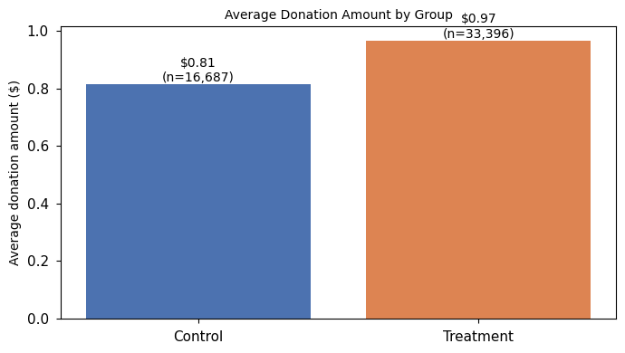
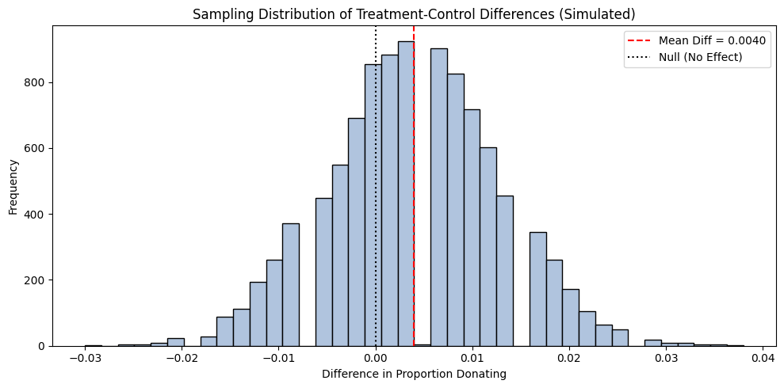
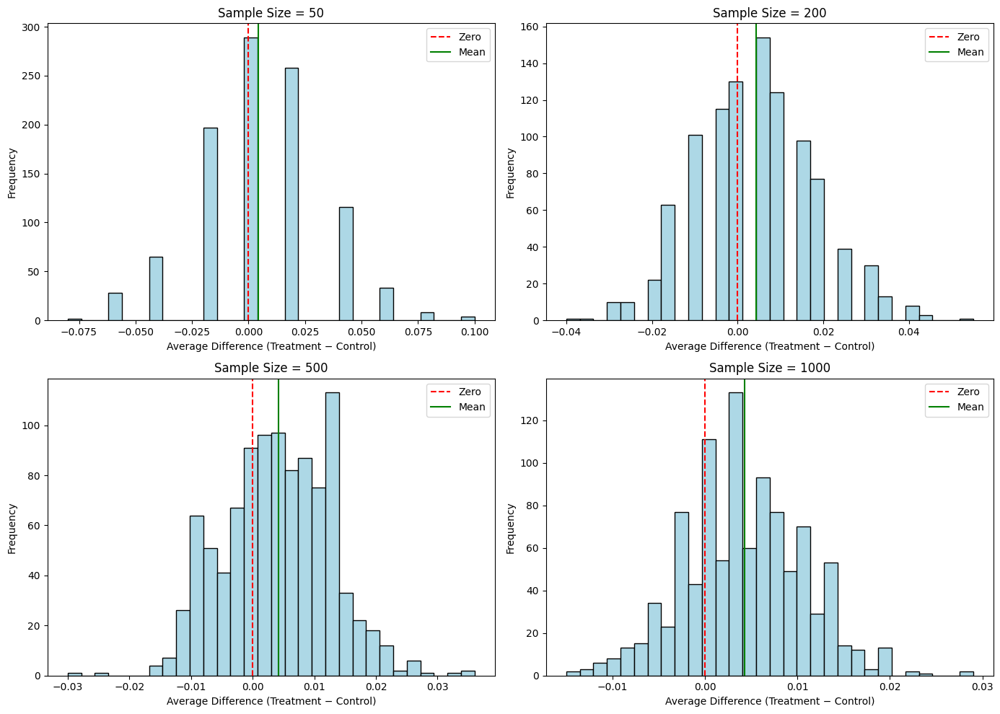

A Replication of Karlan and List (2007)
Introduction
Dean Karlan at Yale and John List at the University of Chicago conducted a field experiment to test the effectiveness of different fundraising letters. They sent out 50,000 fundraising letters to potential donors, randomly assigning each letter to one of three treatments: a standard letter, a matching grant letter, or a challenge grant letter. They published the results of this experiment in the American Economic Review in 2007. The article and supporting data are available from the AEA website and from Innovations for Poverty Action as part of Harvard’s Dataverse.
Objective
The objective of this assignment is to replicate and interpret the findings from Karlan and List’s 2007 field experiment on charitable giving. Using the original dataset, I aim to explore how the presence and structure of a matching donation offer affects both the likelihood and amount of charitable contributions.
This project involves:
- Analyzing treatment effects using t-tests, regression models, and probit analysis
- Comparing donation behavior across different match ratios and suggested ask levels
- Conducting simulations to illustrate the Law of Large Numbers and the Central Limit Theorem
- Presenting results in a clear, reproducible format using Quarto and Python
The overall goal is to better understand the behavioral response to charitable incentives and how small changes in message framing can impact donor behavior.
Description of the Experiment
In their 2007 study published in the American Economic Review, Dean Karlan and John List conducted a large-scale natural field experiment to test the effectiveness of matching donations in a real-world fundraising campaign. Over 50,000 previous donors to a U.S. nonprofit were mailed fundraising letters and randomly assigned to one of two groups:
- Control group: received a standard fundraising letter with no special offer
- Treatment group: received a similar letter but was offered a matching donation, meaning their contribution would be matched by another donor
Within the treatment group, individuals were further randomized into subgroups based on:
- Match ratio: \(1\!:\!1\), \(2\!:\!1\), or \(3\!:\!1\)
- Maximum match amount: \(25{,}000\), \(50{,}000\), \(100{,}000\), or unstated
- Suggested donation amount: equal to 1.25× or 1.5× the donor’s previous contribution
The randomized design allows for causal analysis of how these variations influence both the decision to donate and the amount given. This experiment provides a powerful example of how field experiments can be used to study economic behavior in natural settings.
Data Description
We begin by loading the dataset provided by Karlan and List (2007), which contains detailed records from their fundraising field experiment.
Summary Statistics by Treatment Status
Figure 1. Donation Rate by Group 
The treatment group has a higher donation rate (2.20%) than the control group (1.79%). Sample sizes are shown above each bar.
Figure 2. Average Donation Amount by Group 
Average donations, including non-donors, are higher in the treatment group ($0.97) than in the control group ($0.81), suggesting that the matching offer increased total giving on average. Sample sizes are shown above each bar.
Balance Test
To assess whether the randomization produced comparable treatment and control groups, we tested balance on several pre-treatment characteristics: months since last donation (mrm2), years since first donation, number of prior donations (freq), and a gender indicator (female).
T-Test and Linear Regression for Each Variable
| Variable | Treatment Coefficient | p-value |
|---|---|---|
| mrm2 | 0.0137 | 0.905 |
| years | −0.0575 | 0.270 |
| freq | −0.0120 | 0.912 |
| female | −0.0075 | 0.079 |
None of the estimated treatment effects are statistically significant at the 5% level, indicating balance across observable characteristics. These results are consistent with the balance checks reported in Table 1 of Karlan and List (2007).
Balance Check for mrm2
| Statistic | Value |
|---|---|
| Treatment coefficient | 0.0137 |
| p-value (t-test) | 0.9049 |
| p-value (regression) | 0.9050 |
| 95% confidence interval | [−0.211, 0.238] |
The estimated difference in months since last donation between treatment and control groups is small and statistically insignificant, indicating comparable donation recency prior to treatment.
Additional Balance Tests
Balance Test — Key Estimates
| Variable | Treatment coef | t-stat | p-value | 95% CI |
|---|---|---|---|---|
| mrm2 | 0.0137 | 0.119 | 0.905 | [-0.211, 0.238] |
| years | −0.0575 | −1.103 | 0.270 | [-0.160, 0.045] |
| freq | −0.0120 | −0.111 | 0.912 | [-0.224, 0.200] |
| female | −0.0075 | −1.758 | 0.079 | [-0.016, 0.001] |
None of the estimated treatment effects are statistically significant at the 5% level; the gender indicator is borderline (p = 0.079) but the estimated difference is small.
Experimental Results
Figure 3. Donation Rate by Treatment Status 
The treatment group exhibits a higher donation rate than the control group (2.20% vs. 1.79%). The difference is statistically significant at the 1% level.
Treatment Effect on Donation Rates
We estimate the effect of the matching donation treatment on the probability of giving using both a two-sample t-test and a bivariate linear regression. Both approaches indicate a statistically significant difference in donation rates between the treatment and control groups.
The regression results imply that assignment to the treatment increases the probability of donating by approximately 0.42 percentage points (p = 0.002). Relative to the control group’s donation rate of about 1.8%, this corresponds to a roughly 22% increase in the likelihood of giving.
Although the absolute effect is small, the estimate is precise and consistent across methods, indicating that offering a matching donation increases participation in charitable giving.
| Outcome: Donated (gave) | Estimate | p-value | 95% Confidence Interval |
|---|---|---|---|
| Treatment effect | 0.0042 | 0.002 | [0.002, 0.007] |
Probit Regression
As a robustness check for the binary outcome, we estimate a Probit model and report the average marginal effect. The treatment increases the probability of donating by 0.43 percentage points (p = 0.002), which closely matches the linear probability model estimate.
| Model | Effect on Pr(Donate) | p-value | 95% CI |
|---|---|---|---|
| Probit (AME) | 0.0043 | 0.002 | [0.002, 0.007] |
Differences between Match Rates
We examine whether larger match ratios within the treatment group lead to higher donation rates by comparing 1:1, 2:1, and 3:1 matching offers. Pairwise t-tests indicate no statistically significant differences in donation rates across match ratios.
Relative to a 1:1 match, increasing the ratio to 2:1 raises the donation rate by approximately 0.19 percentage points (p = 0.335), while moving from 2:1 to 3:1 increases the rate by only 0.01 percentage points (p = 0.310). Neither difference is statistically significant.
These results suggest that higher match ratios do not meaningfully increase participation beyond the presence of a match itself, consistent with the findings in Karlan and List (2007).
| Comparison | Change in Donation Rate (pp) | p-value |
|---|---|---|
| 2:1 vs 1:1 | +0.19 | 0.335 |
| 3:1 vs 2:1 | +0.01 | 0.310 |
Effect of Match Ratio on Donation Rates
| Match Ratio | Change in Donation Rate (pp) | p-value |
|---|---|---|
| 2:1 vs 1:1 | +0.19 | 0.338 |
| 3:1 vs 1:1 | +0.20 | 0.313 |
Donation Rates by Match Ratio
Among treated individuals, donation rates are similar across match ratios. The response rate is 2.07% under a 1:1 match, 2.26% under a 2:1 match, and 2.27% under a 3:1 match.
The increase in donation rates beyond a 1:1 match is small—0.19 percentage points for a 2:1 match and 0.01 percentage points for a 3:1 match—and not statistically significant, consistent with the formal tests reported earlier. This pattern aligns with the findings of Karlan and List (2007), which show that increasing the match ratio does not materially increase participation once a match is offered.
| Match Ratio | Donation Rate |
|---|---|
| 1:1 | 0.0207 (2.07%) |
| 2:1 | 0.0226 (2.26%) |
| 3:1 | 0.0227 (2.27%) |
Donation Amount
We next examine whether the matching donation treatment affects the amount donated among individuals who chose to give, focusing on the intensive margin of charitable giving.
A two-sample t-test and a linear regression both estimate a small difference in donation amounts between treatment and control donors; however, the effects are not statistically significant at conventional levels (p ≈ 0.06). The estimated magnitudes are modest.
Overall, these results suggest that while offering a matching donation increases participation, it does not meaningfully affect the amount donated conditional on giving.
Distribution of Donation Amounts Among Donors
Figure 4. Distribution of Donation Amounts by Treatment Status  Donation amounts in both the control and treatment groups are right-skewed, with most contributions concentrated at lower values and a small number of large donations. Mean donation amounts are similar across groups ($45.54 for the control group and $43.87 for the treatment group).
Donation amounts in both the control and treatment groups are right-skewed, with most contributions concentrated at lower values and a small number of large donations. Mean donation amounts are similar across groups ($45.54 for the control group and $43.87 for the treatment group).
Figure 5. Sampling Distribution of Treatment–Control Differences (Simulated)  The figure shows the distribution of treatment–control differences in donation rates across 10,000 simulated experiments with 500 observations per group. The distribution is approximately normal and centered near 0.004, the difference implied by the assumed donation probabilities. The dashed line indicates the mean simulated difference, and the dotted line marks the null of no treatment effect.
Law of Large Numbers
Figure 6. Cumulative estimate of the treatment–control difference in mean donation amounts

Figure 6 plots the cumulative difference in mean donation amounts between the treatment and control groups as observations are added. When the sample size is small, the estimated difference fluctuates substantially. As the number of observations increases, the cumulative estimate stabilizes and converges toward the full-sample difference, illustrated by the horizontal dashed line.
Sampling Variability and Sample Size
Figure 7. Sampling distributions of treatment–control differences by sample size

Figure 7 shows simulated sampling distributions of treatment–control differences in donation rates for sample sizes of 50, 200, 500, and 1,000. With small samples, the distribution is wide. As sample size increases, the distributions concentrate around their mean, indicating greater precision.